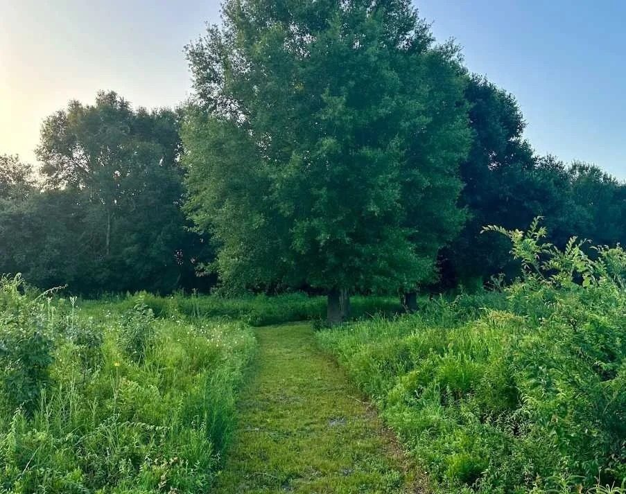

Six Lakes. Endless Discovery.
See the full park map →Each lake has its own character. Find the one that becomes yours.
01Westbury Lake
The easiest place to start: a walking loop, the fishing pier, and the beloved Turtle Bridge.
 02
02Triangle Lake
The front porch of the park: landmark sign, prairie garden, and a grand old live oak.
 03
03Scout Lake
Where water, nature, and engineering come together along the bayou.
 04
04Heron Lake
The best place to slow down and watch wildlife under the ancient oak.
 05
05Willow Lake
Big water views and wetlands at the heart of the Greenway.
 06
06Prairie Lake
Home to the Prairie Trail and Houston's spring wildflower displays.
